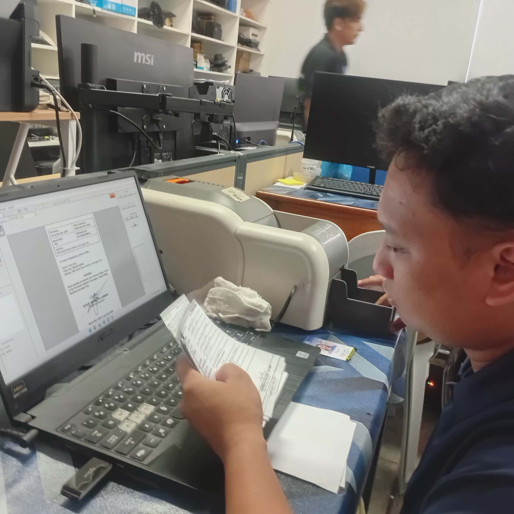
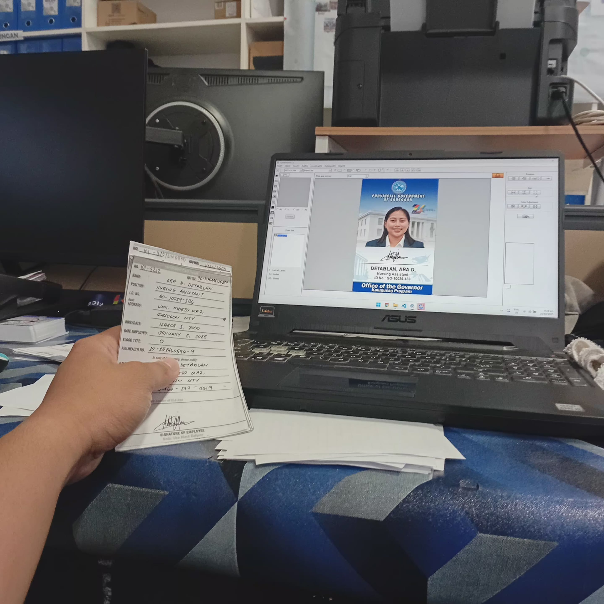
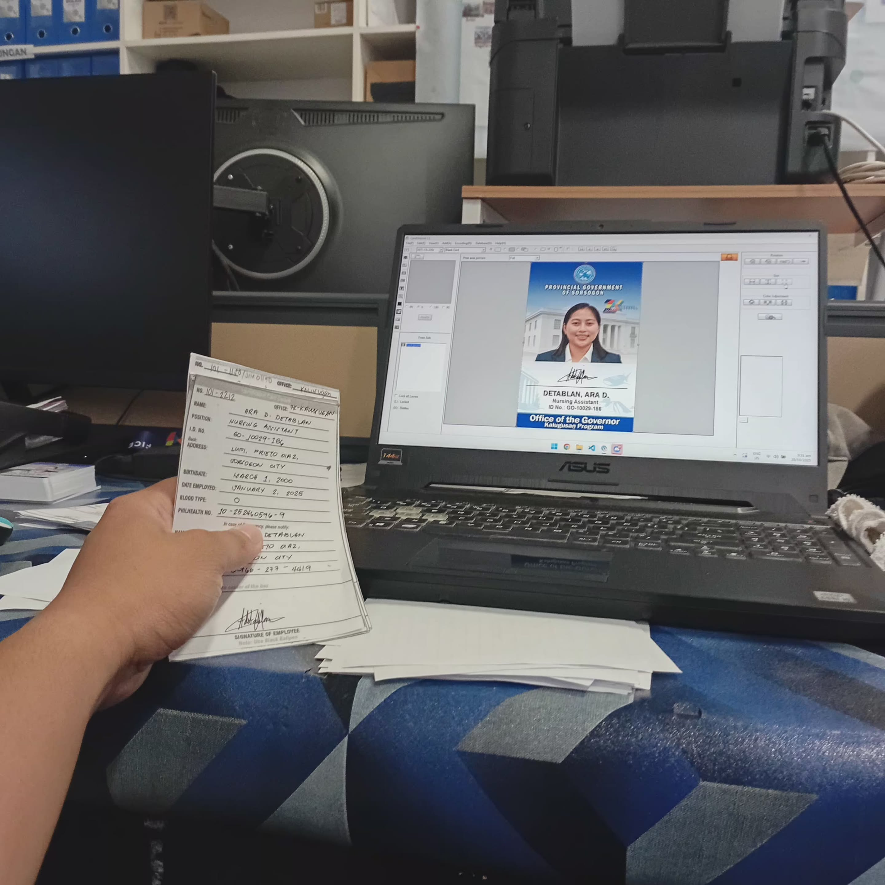
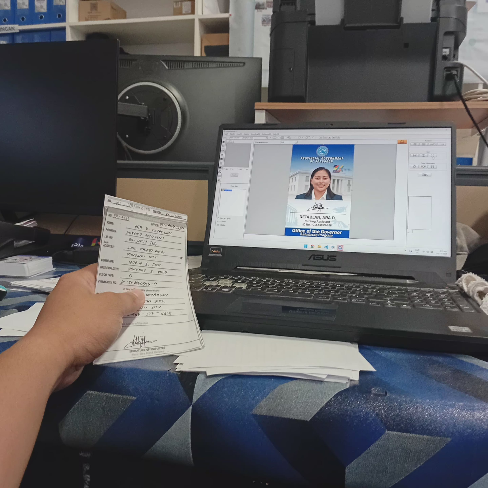

Week 10
During my tenth week, I was responsible for the production of identification cards for significant government institutions within the province. My workflow focused on facilitating the printing of IDs for the workforce at the Sorsogon City Capitol as well as the medical staff and employees of the Sorsogon City Medical Care Hospital.
Furthermore, I handled the ID processing for the Governor’s Office. This task required strict attention to detail and quality control to ensure that the credentials for these executive departments were produced professionally and prepared for distribution.

 

